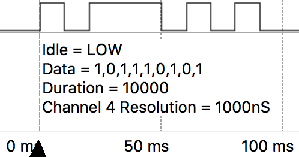
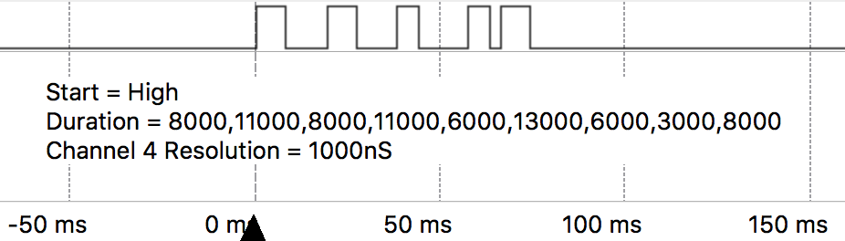
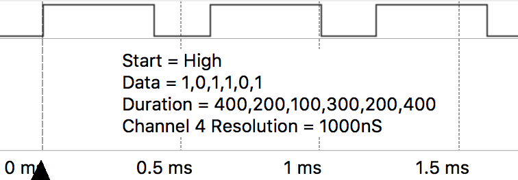
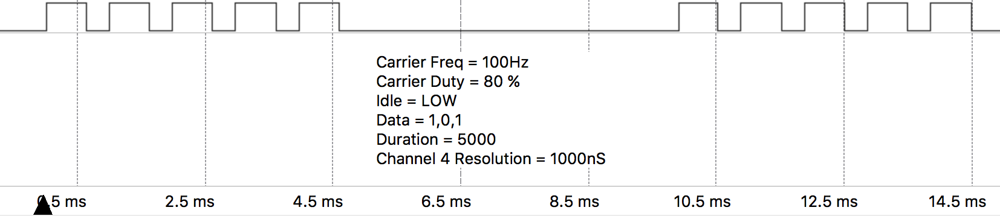

Detailed information about this class can be found in RMT.
The RMT (Remote Control) peripheral of the ESP32 is primarily designed to send and receive infrared remote control signals that use on-off-keying of a carrier frequency, but due to its design it can be used to generate various types of signals, this class will allow you to do this.
The RMT has 7 channels, of which 5 are available and can be mapped to any GPIO pin (Note: Pins P13 -P18 can only be used as inputs).
| Channel | Resolution | Maximum Pulse Width |
|---|---|---|
| 0 | Used by on-board LED | |
| 1 | Used by pycom.pulses_get() |
|
| 2 | 100nS | 3.2768 ms |
| 3 | 100nS | 3.2768 ms |
| 4 | 1000nS | 32.768 ms |
| 5 | 1000nS | 32.768 ms |
| 6 | 3125nS | 102.4 ms |
| 7 | 3125nS | 102.4 ms |
The following examples create an RMT object on channel 4, configure it for transmission and send some data in various forms. The resolution of channel 4 is 1000 nano seconds, the given values are interpreted accordingly.
In this first example, we define the signal as a tuple of binary values that define the shape of the desired signal along with the duration of a bit.
from machine import RMT
# Map RMT channel 4 to P21, when the RMT is idle, it will output LOW
rmt = RMT(channel=4, gpio="P21", tx_idle_level=RMT.LOW)
# Produces the pattern shown in data, where each bit lasts
# duration * channel resolution = 10000 * 1000ns = 10ms
data = (1,0,1,1,1,0,1,0,1)
duration = 10000
rmt.pulses_send(duration, data)

In this example we define the signal by a tuple of durations and what state the signal starts in.
from machine import RMT
# Map RMT channel 4 to P21, when the RMT is idle, it will output LOW
rmt = RMT(channel=4, gpio="P21", tx_idle_level=RMT.LOW)
# The list of durations for each pulse to be, these are in units of the channels
# resolution:
# duration = Desired pulse length / Channel Resolution
duration = (8000,11000,8000,11000,6000,13000,6000,3000,8000)
# `start_level` defines if the signal starts off as LOW or HIGH, it will then
# toggle state between each duration
rmt.pulses_send(duration, start_level=RMT.HIGH)

This third example, is a combination of the above two styles of defining a signal. Each pulse has a defined duration as well as a state. This is useful if you don’t always want the signal to toggle state.
from machine import RMT
# Map RMT channel 4 to P21, when the RMT is idle, it will output LOW
rmt = RMT(channel=4, gpio="P21", tx_idle_level=RMT.LOW)
# Produces the pattern shown in data, where each bit lasts
# duration[i] * channel resolution = duration[i] * 1000ns
data = (1,0,1,1,0,1)
duration = (400,200,100,300,200,400)
rmt.pulses_send(duration, data)

The following example creates an RMT object on channel 4 and configures it for transmission with carrier modulation.
from machine import RMT
rmt = RMT(channel=4,
gpio="P21",
tx_idle_level=RMT.LOW,
# Carrier = 100Hz, 80% duty, modules HIGH signals
tx_carrier = (100, 70, RMT.HIGH))
data = (1,0,1)
duration = 10000
rmt.pulses_send(duration, data)

The following example creates an RMT object on channel 2, configures it for receiving, then waits for the first, undefined number of pulses without timeout
from machine import RMT
rmt = machine.RMT(channel=2)
rmt.init(gpio="P21", rx_idle_threshold=1000)
data = rmt.pulses_get()
If tx_idle_level is not set to the opposite of the third value in the tx_carrier tuple, the carrier wave will continue to be generated when the RMT channel is idle.
The following example creates an RMT object on channel 2, configures it for receiving a undefined number of pulses, then waits maximum of 1000us for the first pulse.
from machine import RMT
# Sets RMT channel 2 to P21 and sets the maximum length of a valid pulse to
# 1000*channel resolution = 1000 * 100ns = 100us
rmt = machine.RMT(channel=2, gpio="P21", rx_idle_threshold=1000)
rmt.init()
# Get a undefined number of pulses, waiting a maximum of 500us for the first
# pulse (unlike other places where the absolute duration was based on the RMT
# channels resolution, this value is in us) until a pulse longer than
# rx_idle_threshold occurs.
data = rmt.pulses_get(timeout=500)
The following example creates an RMT object on channel 2, configures it for receiving, filters out pulses with width < 20*100 nano seconds, then waits for 100 pulses
from machine import RMT
rmt = machine.RMT(channel=2, # Resolution = 100ns
gpio="P21",
# Longest valid pulse = 1000*100ns = 100us
rx_idle_threshold=1000,
# Filter out pulses shorter than 20*100ns = 2us
rx_filter_threshold=20)
# Receive 100 pulses, pulses shorter than 2us or longer than 100us will be
# ignored. That means if it receives 80 valid pulses but then the signal
# doesn't change for 10 hours and then 20 more pulses occur, this function
# will wait for 10h
data = rmt.pulses_get(pulses=100)